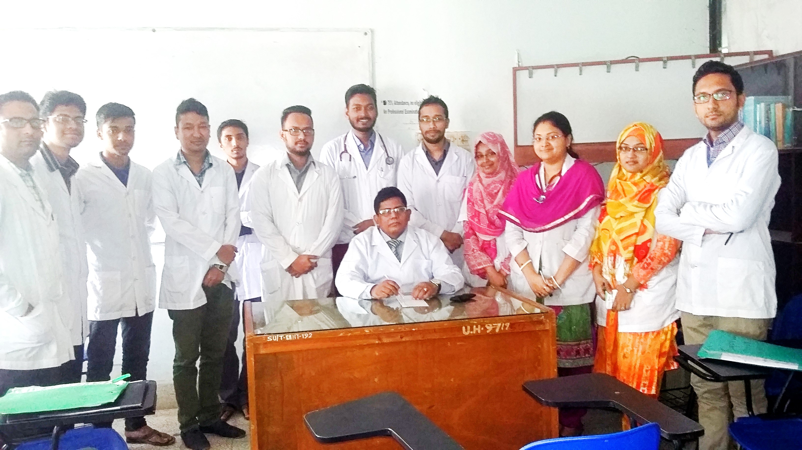

Teaching Skill
Dr Chowdhury is an excellent mentor for undergraduate, in-service trainee doctors and postgraduate candidates.
Dr Chowdhury encourages the young doctors to learn surgery by presenting the critical surgical cases in the morning scientific session of the department.

Dr. Chowdhury was the Chairman of Journal Club. Teachers, Clinical Students, In-Service Trainee doctors, Medical Officers participated the weekly discussion session.
Dr. Chowdhury encourages the young doctors to publish scientific papers in the journal and perform a research. He likes to make a discussion session on the subject.

Dr. Chowdhury believes that surgical practice is teamwork and every member of the team must have skill to manage the cases.He demonstrates the optimal preoperative assessment and preparation of the patient to the team, which facilitates a safe surgery.

The in-service trainee doctors celebrate with the teachers the ward completion ceremony. Dr Chowdhury has a good relation with the colloquies.